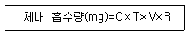
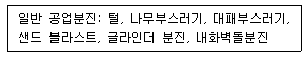
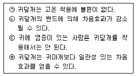
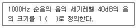

산업위생관리기사 (2005-05-29 기출문제)
1과목: 산업위생학개론
1. 평균 근로자 수가 200인이 근무하는 사업장에서 1년에 16명의 재해자가 발생하였으며 연근로시간이 인당 2400시간이다. 재해율을 연천인율로 알맞게 나타낸 것은?
- 40
- 50
- 60
- 80
(정답률: 80%)

2. 우리나라 산업위생의 역사적인 설명으로 틀린 것은?
- 1958년 산업위생 최초의 법령인 근로기준법 제정
- 1963년 대한 산업보건협회 창립
- 1977년 근로복지공사 설립, 부속병원 개설
- 1981년 노동청이 노동부로 승격,산업안전보건법공포
(정답률: 알수없음)
3. 국민 영양 권장량을 결정하는데 있어서 영양기준 설정 개념과 가장 거리가 먼 것은?
- 이상량
- 지적량
- 충분량
- 작업량
(정답률: 알수없음)
4. 작업대사율에 대한 내용중 알맞지 않은 것은?
- 작업대사량은 작업강도를 작업에 사용되는 열량 측면에서 보는 한가지 지표이다.
- 작업대사율 =작업시사용열량/기초열량
- 작업으로 소모되는 열량을 계산하기 위해 연령, 성별, 체격의 크기를 고려하여 사용하는 지수이다.
- 주작업의 작업대사율이 2 - 4일 때 작업강도는 강작업이다.
(정답률: 알수없음)
5. 근로자로부터 40cm 떨어진 물체 9kg을 바닥으로부터 150cm 들어올리는 작업을 1분에 5회씩 1일 8시간 실시할 때 AL은 4.6kg, MPL은 13.8kg, RWL 3.3kg이라면 LI (중량물 취급지수)는? (단, 박스의 손잡이는 양호함)
- 4.2
- 3.0
- 2.7
- 1.4
(정답률: 28%)
6. 산업피로 조사를 위한 기능검사중 생리심리적검사 항목과 가장 거리가 먼 것은? (단, 기능검사는 연속측정법, 생리심리적검사법 및 생화학적 검사법으로 구분된다)
- 호흡기능측정
- 역치측정
- 근력검사
- 행위검사
(정답률: 알수없음)
7. 다음 중 산소결핍장소와 가장 거리가 먼 곳은?
- 장기간 사용하지 않은 우물 내부
- 분뇨나 썩은 물이 들어 있는 정화조
- 질소, 아르곤 등 불활성가스가 들어 있는 탱크
- 구조물을 세척하는 고독성 탈지 세척조
(정답률: 54%)
8. 전신피로에 관한 설명으로 틀린 것은?
- 작업대사량이 증가하면 산소소비량도 비례하여 계속 증가하나 작업대사량이 일정한계를 넘으면 산소소비량은 증가하지 않는다.
- 작업강도가 높을수록 혈중 포도당농도는 급속히 저하하며, 이에따라 피로감이 빨리온다.
- 작업강도가 증가하면 근육내 글리코겐량이 비례적으로 증가되어 근육피로가 발생된다.
- 훈련받은 자와 그러지 않은 자의 근육내 글리코겐 농도는 차이를 보인다.
(정답률: 알수없음)
9. 인간공학이 현대 산업에서 중요시되고 있는 이유와 가장 거리가 먼 것은?
- 인간존중의 사상으로 볼 때 종전의 기계는 개선되어야할 문제점들이 많기 때문이다.
- 자동화됨에 따라 근로자의 실직과 직업병이 늘기 때문이다.
- 생산경쟁이 격심해짐에 따라 이 분야를 합리화함으로써 생산성을 증대시키고자 함이다.
- 자동화 또는 자동 제어된 생산과정 속에서 일하고 있으므로 기계와 인간의 문제가 연구되어야 하기 때문이다.
(정답률: 40%)
10. 육체적 작업능력(PWC)이 16kcal/min인 근로자가 1일 8시간 동안 물체를 운반하고 있다. 이 때의 작업대사량은 8kcal/min이고, 휴식시의 대사량은 3kcal/min이라면이 사람이 휴식시간과 작업시간의 배분으로 가장 적절한경우는? (단, Hertig(1992)식 적용)
- 매시간 약 35분 휴식을 취하고 25분 작업한다.
- 매시간 약 32분 휴식을 취하고 28분 작업한다.
- 매시간 약 27분 휴식을 취하고 33분 작업한다.
- 매시간 약 25분 휴식을 취하고 35분 작업한다.
(정답률: 73%)
11. 피로의 증상에 대한 설명으로 옳지 않은 것은?
- 체온이 높아지나 피로정도가 심해지면 도리어 낮아 진다.
- 혈압은 초기는 높아지나 피로가 진행되면 도리어 낮아 진다.
- 호흡이 얕고 빠른데 이는 혈액중 이산화탄소량이 증가하여 호흡중추를 자극하기 때문이다.
- 젖산 및 혈당치가 높아져 산혈증(acidosis)으로 전이 되기도 한다.
(정답률: 54%)
12. 광부들의 사고와 질병, 예방방법, 비소독성 등을 포함한 광산업에 대한 상세한 내용을 설명한 [광물에 대하여]란 저서를 남긴 이는?
- 갈랜
- 포트
- 라마찌니
- 아그리콜라
(정답률: 30%)
13. 산업위생전문가가 근로자에 대한 책임, 기업주와 고객에 대한 책임, 일반대중에 대한 책임, 전문가로서의 책임을 가지고 지켜야하는 윤리강령중 기업주와 고객에 대한 책임과 관계된 윤리강령으로 가장 알맞는 것은? (단, 미국산업위생학술원 윤리강령 기준)
- 근로자, 사회 및 전문직종의 이익을 위해 과학적 지식을 공개하고 발표한다.
- 결과와 결론을 뒷받침할 수 있도록 기록을 유지하고 산업위생사업을 전문가 답게 운영, 관리한다.
- 전문가 판단이 타협에 의하여 좌우될 수 있는 상황에는 개입하지 않는다.
- 기업체의 기밀은 누설하지 않는다.
(정답률: 알수없음)
14. 작업시 가면시간은 적어도 얼마를 주어야 수면효과가 있다고 볼 수 있는가?
- 10분 이상
- 30분 이상
- 1시간 이상
- 1시간 30분 이상
(정답률: 39%)
15. 주요재해와 유사재해의 비율로 적절한 것은? (단, 하인리히(Heinrich) 학설 기준, 주요재해:유사재해)
- 1 : 400
- 1 : 300
- 1 : 50
- 1 : 29
(정답률: 알수없음)
16. 외부의 환경변화나 신체활동이 반복되어 인체 조절기능이 숙련되고 습득된 상태를 순화라고 한다. 이러한 순화의 예와 가장 거리가 먼 것은?
- 열대지방 사람들은 수분 섭취량이 증가한다.
- 고산지대 사람들은 적혈구 수가 많다.
- 음주가들은 알콜 분해효소의 작용이 강하다.
- 병원균의 침범을 받으면 이에 대한 면역이 생긴다.
(정답률: 24%)
17. 25℃, 1기압인 작업장에서 100ppm의 톨루엔은 몇 mg/m3인가? (단, 톨루엔 분자량 = 92)
- 125
- 188
- 243
- 376
(정답률: 알수없음)
18. 작업적성에 대한 생리적 적성검사 항목으로 가장 적합한 것은?
- 감각기능 검사
- 지능 검사
- 지각동작 검사
- 인성 검사
(정답률: 60%)
19. 산업재해의 지표중에서 도수율을 바르게 나타낸 것은?
- 일정기간중 재해발생건수/일정기간중 연근로시간수 ⒡1,000,000
- 일정기간중 작업손실일수/일정기간중 연근로시간수 ⒡1,000
- 일정기간중 작업손실일수/일정기간중 연평균근로자수 ⒡1,000,000
- 일정기간중 재해발생건수/일정기간중 연평균근로자수 ⒡1,000
(정답률: 알수없음)
20. 분진발생공정에서 측정한 호흡성분진의 농도가 각각 2.5, 2.8, 3.1, 2.6 ㎎/m3인 경우 기하평균 농도(㎎/m3)는?
- 2.62
- 2.68
- 2.74
- 2.79
(정답률: 알수없음)
2과목: 작업위생측정 및 평가
21. 어느 작업장에 compressor 4대가 작동되고 있는데 소음 레벨을 측정한 결과 각각 80㏈을 얻었다. 만약 4대가 동시에 작동되면 소음 레벨은?
- 89 ㏈
- 86 ㏈
- 83 ㏈
- 81 ㏈
(정답률: 50%)
22. 소음의 측정시간 및 횟수에 관한 기준으로 알맞지 않는 것은?
- 단위 작업장소에서 소음수준은 규정된 측정위치 및 지점에서 1일 작업시간동안 6시간 이상 연속측정한다.
- 단위 작업장소에서 소음수준은 규정된 측정위치 및 지점에서 1일 작업시간을 1시간 간격으로 나누어 6회이상 측정한다.
- 소음의 발생특성이 연속 음으로서 측정치가 변동이 없다고 자격자 또는 지정측정기관이 판단한 경우에는 1시간 동안을 등간격으로 나누어 3회 이상 측정할 수 있다.
- 단위 작업장소에서의 소음발생시간이 6시간이내인 경우나 소음발생원에서의 발생시간이 간헐적인 경우에는 발생시간동안 연속측정하거나 등 간격으로 나누어 3회이상 측정하여야 한다.
(정답률: 알수없음)
23. 유량, 측정시간, 회수율 및 분석 등에 의한 오차가 각각 8%, 2%, 6%, 3% 일 때의 누적오차(%)는?
- 9.1
- 10.6
- 11.3
- 12.4
(정답률: 90%)
24. 석면분진 측정방법에서 공기 중 석면시료를 가장 정확하게 분석할 수 있고 석면의 성분 분석이 가능하며 매우 가는 섬유도 관찰가능하나 값이 비싸고 분석시간이 많이 소요되는 것은?
- 위상차현미경법
- 편광현미경법
- X-선 회절법
- 전자현미경법
(정답률: 59%)
25. 작업환경 중 MIBK(TLV=50ppm)가 25ppm, MEK(TLV=200ppm)가 50ppm이고 TCE(TLV=50ppm)가 30ppm일 때 유해물질의 허용농도(노출기준)는? (단, 상가작용 기준)
- 87.8 ppm
- 77.8 ppm
- 67.8 ppm
- 57.8 ppm
(정답률: 알수없음)
26. 활성탄관을 사용하여 흡착하여야 하는 시료로 가장 알맞는 것은?
- 불산, 염산
- 방향족 아민류
- 지방족 아민류
- 비극성류의 유기용제
(정답률: 40%)
27. 작업환경측정 시 예비조사단계에서 동일노출그룹(HEG)을 설정하게 된다. 다음 중 동일노출그룹을 설정하는 목적과 가장 거리가 먼 것은?
- 시료채취수를 경제적으로 할 수 있다.
- 작업장내 지역별 농도분포도를 파악하기 위함이다.
- 모든 작업의 근로자에 대한 노출농도를 평가할 수 있다.
- 역학조사 수행시 해당근로자가 속한 동일노출그룹의 노출농도를 근거로 노출원인 및 농도를 추정할 수 있다.
(정답률: 28%)
28. 다음 중 실리카겔이 활성탄에 비해 갖는 장점이 아닌 것은?
- 수분과 친화력이 강하기 때문에 습도가 높은 작업장에 유리하다.
- 유독한 이황화탄소를 탈착용매로 사용하지 않는다.
- 탈착용매가 화학분석이나 기기분석에 방해물질로 작용하는 경우가 적다.
- 활성탄으로 포집이 힘든 아닐린이나 아민류의 채취도가능하다.
(정답률: 알수없음)
29. 입자상 물질 채취를 위하여 사용되는 직경분립충돌기의 장점 또는 단점으로 틀린 것은?.
- 호흡기의 부분별로 침착된 입자크기의 자료를 추정할 수 있다.
- 되튐으로 인한 시료의 손실이 일어날 수 있다.
- 입자의 질량크기 분포를 얻을 수 있다.
- 시료채취가 용이하고 비용이 저렴하다.
(정답률: 37%)
30. 고열 측정구분에 의한 측정기기와 측정시간에 관한 기준으로 틀린 것은?
- 흑구 및 습구흑구온도 측정시간: 직경이 15센티미터일 경우 25분 이상
- 흑구 및 습구흑구온도 측정기기: 직경이 5센티미터 이상되는 흑구온도계 또는 습구흑구온도를 동시에 측정할 수 있는 기기
- 습구온도 측정시간: 아스만통풍건습계 25분 이상
- 습구온도 측정시간: 자연습구온도계 15분 이상
(정답률: 알수없음)
31. 어떤 작업장에서 50% Acetone, 30% Benzene 그리고 20% Xylene의 중량비로 조성된 용제가 증발하여 작업환경을 오염시키고 있다. 이때 각각의 TLV는 1600㎎/m3 ,720㎎/m3 그리고 670㎎/m3일때 이 작업장의 혼합물의 허용농도는?
- 약 570㎎/m3
- 약 690㎎/m3
- 약 970㎎/m3
- 약 1600㎎/m3
(정답률: 알수없음)
32. 옥외(태양광선이 내리쬐는 장소)의 습구흑구온도지수(WBGT) 산출식은?
- (0.7×자연습구온도)+(0.2×흑구온도) +(0.1×건구온도)
- (0.7×자연습구온도)+(0.3×흑구온도) +(0.2×건구온도)
- (0.7×자연습구온도)+(0.4×흑구온도) +(0.3×건구온도)
- (0.7×자연습구온도)+(0.5×흑구온도) +(0.4×건구온도)
(정답률: 40%)
33. 근로자가 일정시간 동안 일정농도의 유해물질에 노출될 때 체내에 흡수되는 유해물질의 양은 다음 식으로 구한다. 용어의 설명이 잘못된 것은?

- C : 공기중 유해물질농도
- T : 노출시간
- V : 작업공간내의 공기기적
- R : 체내 잔류율
(정답률: 알수없음)
34. '1차표준'에 관한 내용으로 틀린 것은?
- 물리적 크기에 의해서 공간의 부피를 직접 측정할 수 있는 기구를 말한다.
- 펌프의 유량을 보정하는 데 '1차 표준'으로서 비누거품미터가 가장 널리 사용된다.
- 유속측정용 Wet-test미터, Rota미터, Orifice미터가 대표적으로 사용된다.
- 2차표준기기는 1차표준기기를 이용하여 보정해야 한다.
(정답률: 알수없음)
35. 크실렌을 측정하여 분석한결과 5ppm이 검출되었다. 크실렌의 SAE(시료채취 및 분석오차)는 0.12, 노출기준이 100ppm일 때 신뢰하한값(LCL:95% 신뢰도)은?
- 0.03
- -0.07
- 0.14
- -0.17
(정답률: 알수없음)
36. 세척제로 사용하는 트리클로로에틸렌의 근로자 노출농도를 측정하고자 한다. 과거의 노출농도를 조사해본 결과, 평균60ppm이었다. 활성탄관을 이용하여 0.17ℓ/분으로 채취하였다. 트리클로로에틸렌의 분자량은 131.39이고 가스크로마토그래피의 정량한계는 시료당 0.25mg이다. 채취하여야할 최소한의 시간(분)은? (단, 25℃, 1기압기준)
- 4.6분
- 6.7분
- 9.1분
- 13.9분
(정답률: 알수없음)
37. 소음측정방법으로 틀린 것은?
- 소음계 지시침의동작은 빠름(fast)상태로 한다.
- 소음계의 청감보정회로는 A특성으로 행하여야 한다.
- 소음계의 지시치가 변동하지 않는 경우에는 당해 지시치를 그 측정점에서의 소음수준으로 한다.
- 측정에 사용되는 기기는 누적소음노출량 측정기, 적분형소음계 또는 이와 동등이상의 성능이 있는 것으로하되 개인시료 채취방법이 불가능한 경우에는 지시소음계를 사용할 수 있다.
(정답률: 알수없음)
38. 유도결합프라즈마(ICP)에 관한 설명으로 알맞지 않는 것은?
- 적은양의 시료를 가지고 한꺼번에 많은 금속을 분석할 수 있다는 것이 가장 큰 장점이다.
- 사용방법이 복잡하고 넓은 농도범위에서 직선성 확보가 어려운 단점은 있으나 분석의 정확도가 높다.
- 전형적인 장치구성은 시료주입시스템,플라즈마 토오치,라디오주파수 발생기,파장분리기,검출기, 그리고 컴퓨터자료처리장치이다.
- 가장 일반적으로 시료를 플라즈마로 보내는 방법은 액체 에어로졸을 직접 주입하는 분무기에 의한 것이다.
(정답률: 알수없음)
39. 유리규산을 채취하여 X-선 회절법으로 분석하는데 적절하고 6가크롬 그리고 아연화합물의 채취에 이용하며 수분에 영향이 크지 않아 공해성 먼지, 총먼지 등의 중량분석을 위한 측정에 사용하는 막여과지로 가장 적합한 것은?
- MCE 막여과지
- PVC 막여과지
- PTFE 막여과지
- 은 막여과지
(정답률: 72%)
40. 작업장에서 현재 총흡음량은 600 sabins이다. 이 작업장을 천장과 벽 부분에 흡음제를 이용하여 3,000 sabins를 추가 하였을 때 흡음대책에 따른 실내소음의 저감량은?
- 약 12 dB
- 약 8 dB
- 약 4 dB
- 약 3 dB
(정답률: 58%)
3과목: 작업환경관리대책
41. 다음 조건에서 덕트의 반송속도로 적절한 것은?

- 5m/sec
- 10m/sec
- 15m/sec
- 20m/sec
(정답률: 알수없음)
42. 귀덮개의 착용시 일반적으로 요구되는 차음 효과로 가장 알맞는 것은?
- 저음에서 15 ㏈ 이상, 고음에서 30 ㏈ 이상
- 저음에서 20 ㏈ 이상, 고음에서 45 ㏈ 이상
- 저음에서 25 ㏈ 이상, 고음에서 50 ㏈ 이상
- 저음에서 30 ㏈ 이상, 고음에서 55 ㏈ 이상
(정답률: 알수없음)
43. 어느 유체관의 동압(Velocity pressure)이 20㎜H2O 이고 관의 직경이 25㎝일 때 유량(m3/min)은? (단, 21℃ 1기압 기준)
- 약 89
- 약 72
- 약 67
- 약 53
(정답률: 50%)
44. 20℃의 송풍관 내부에 660m/분으로 공기가 흐르고 있을때 속도압은? (단,0℃ 공기 밀도는 1.296㎏/m3이다.)
- 7.5㎜H2O
- 9.8㎜H2O
- 13.86㎜H2O
- 17.7㎜H2O
(정답률: 37%)
45. 충진탑(packed bed type)의 충진물질이 갖추어야 할 조건이 아닌 것은?
- 압력손실이 적고 충진밀도가 클 것
- 단위부피내의 표면적이 클 것
- 세정액의 체류현상(hold-up)이 클 것
- 대상물질에 부식성이 작을 것
(정답률: 알수없음)
46. 관내유속 5m/sec, 관경 0.1m 일때 Reynold 수는? (단, 20℃,1기압,동점성계수는 1.5×10-5m2/)
- 1.4×105
- 1.7×105
- 2.1×104
- 3.3×104
(정답률: 알수없음)
47. 다음 방음 보호구에 대한 설명중 옳은 것 만으로 짝지어진 것은?

- ㉠, ㉡
- ㉡, ㉢
- ㉡, ㉣
- ㉠, ㉢
(정답률: 70%)
48. 흡인풍량이 100m3/min, 송풍기 유효전압이 150mmH2O, 송풍기 효율이 70%, 여유율이 1.2인 송풍기의 소요 동력은? (단, 송풍기효율과 원동기 여유율을 고려함)
- 4.2kW
- 6.4kW
- 8.3kW
- 12.6kW
(정답률: 47%)
49. 사무실 직원이 모두 퇴근한 직후인 오후 6시 20분에 측정한 공기 중 이산화탄소 농도는 1200ppm, 사무실이 빈상태로 1시간이 경과한 오후 7시 20분에 측정한 이산화탄소 농도는 400ppm이었다. 이 사무실의 시간당 공기교환 횟수는? (단, 외부공기 중의 이산화탄소의 농도는 330ppm 임)
- 3.26
- 2.52
- 1.26
- 0.26
(정답률: 알수없음)
50. 푸쉬풀후드(push-pull hood)에 대한 설명으로 적합하지 않는 것은?
- 도금조와 같이 폭이 넓은 경우, 포집효율을 증가시키면서 필요유량을 줄일 수 있다.
- 공정에서 작업물체를 처리조에 넣거나 꺼낼 때 공기막이 형성되어 오염물질 발생을 방지할 수 있다.
- 개방조 한 변에서 압축공기를 이용하여 오염물질이 발생하는 표면에 공기를 불어 반대쪽에 오염물질이 도달하게 한다.
- 제어속도는 푸쉬 제트기류에 의해 발생한다.
(정답률: 알수없음)
51. 작업조건이 발생기류가 높고 유해물질이 활발하게 발생하는 스프레이 도장, 분쇄기 작업시 제어속도의 범위로 가장 적절한 것은? (단, 미국산업위생전문가협의회 권고 )
- 0.5 - 1.0m/sec
- 1.0 - 2.5m/sec
- 2.5 - 5.5m/sec
- 5.5 - 7.5m/sec
(정답률: 알수없음)
52. 레시바식 캐노피형 후드를 설치코자 한다. 배출원의 크기(E)에 대한 후드면과 배출원간의 거리(H)의 비(H/E)는 얼마로 하는 것이 가장 좋은가?
- 0.7 이하
- 0.8 이하
- 0.9 이하
- 1.0 이하
(정답률: 28%)
53. 분압(증기압)이 3.0mmHg인 물질이 공기중에서 도달할 수 있는 최고농도(포화농도, ppm)는?
- 약 4000
- 약 5000
- 약 6000
- 약 7000
(정답률: 40%)
54. 어느 작업장에서 톨루엔(분자량 92, 허용기준 100ppm)과 이소프로필 알콜(분자량 60, 허용기준 400ppm)을 각각 100g/시간을 사용하며, 여유계수(K)는 각각 10이다. 필요환기량(m3/시간)은? (단, 21℃, 1기압기준, 두물질은 상가작용을 한다)
- 약 1900
- 약 2400
- 약 3600
- 약 4100
(정답률: 알수없음)
55. 최근 에너지 절약의 일환으로 난방이나 냉방을 실시할 때 외부공기를 100% 공급하지 않고 실내공기를 재순환 시켜 외부공기와 혼합하여 공급한다. 재순환 공기 중 CO2 농도는 750ppm, 급기중 CO2 농도는 650ppm 이었다. 급기중외부공기의 함량(%)은? (단, 외부공기의 CO2 농도는 330ppm, 급기는 재순환공기와 외부공기가 혼합된 공기)
- 23.8%
- 33.8%
- 43.8%
- 53.8%
(정답률: 알수없음)
56. 유해성이 적은 물질로 대치한 예로 알맞지 않는 것은?
- 금속제품의 탈지에 트리클로르에틸렌을 사용하던 것을 계면활성제로 전환한다.
- 금속제품 도장용으로 유기용제를 수용성 도료로 전환한다.
- 분체의 원료는 입자가 큰 것으로 바꾼다.
- 아소염료의 합성에서 원료를 디클로로벤지딘을 사용하던 것을 벤지딘으로 전환한다.
(정답률: 73%)
57. 손보호구에 대한 설명 중 맞는 것은?
- 일반작업용 장갑의 재료 중 면은 촉감, 구부러짐 등이 우수하며, 마모가 잘되지 않는다.
- 용접용 보호장갑의 재료는 나일론과 비닐론을 사용하며 유연성과 탄력성이 있어야 한다.
- 전기용 장갑의 외측파손을 막기 위해 가죽장갑을 착용하고 작업해야 한다.
- 내열장갑으로 가장 많이 사용하는 것으로는 알루미늄으로 활성탄 분말로 표면처리하여 사용한다.
(정답률: 42%)
58. 위생보호구에 대한 설명으로 틀린 것은?
- 개인 위생보호구는 유해물질을 줄이거나 완전히 제거하지 못하는 경우에 착용한다.
- 방진 마스크의 필터는 유해물질을 걸러주는데 중요한 부품이며 재질은 면,합성섬유, 금속섬유등이 있다.
- 산소가 결핍되어 있거나 유해물질의 농도가 높을 때 에는 방독 마스크가 효과적이다.
- 방독마스크의 흡수제로 가장 많이 쓰이는 것은 활성탄이다.
(정답률: 알수없음)
59. 원심력송풍기 중 전향 날개형 송풍기에 관한 설명으로 틀린 것은?
- 송풍기의 임펠러가 다람쥐 쳇바퀴 모양으로 회전날개가 회전방향과 동일한 방향으로 설계되어 있다.
- 동일 송풍량을 발생시키기 위한 임펠러 회전속도가 상대적으로 낮아 소음문제가 거의 없다.
- 강도문제가 그리 중요하지 않기 때문에 저가로 제작이 가능하다.
- 높은 압력손실에서도 송풍량 변동이 적어 전체환기나 공기 조화용으로 널리 사용된다
(정답률: 알수없음)
60. 국소배기장치에서 공기공급이 필요한 이유로 틀린 것은?
- 국소배기장치의 효율유지
- 작업장의 교차기류 유지
- 에너지 절감
- 안전사고 예방
(정답률: 59%)
4과목: 물리적유해인자관리
61. 원자핵에서 방출되는 전자의 흐름으로 알파(α)입자보다 가볍고 속도는 10배 빠르므로 충돌할 때마다 튕겨져서 방향을 바꾼다. 외부 조사도 잠재적 위험이 되나 내부 조사가 더 큰 건강상의 문제를 일으키는 방사선은?
- 베타(β)입자
- 감마(γ)입자
- 양자 입자
- 중성자 입자
(정답률: 알수없음)
62. 전리방사선에 대한 감수성이 가장 낮은 인체조직은?
- 골수
- 생식선
- 신경조직
- 임파조직
(정답률: 알수없음)
63. 다음 중 열경련의 치료 방법으로 가장 적절한 것은?
- 수분 및 NaCl 보충
- 휴식
- 체온의 급속한 냉각
- 5% 포도당 공급
(정답률: 40%)
64. 고압환경에서의 2차적인 가압현상(화학적 장해)에 관한 설명으로 알맞지 않는 것은?
- 산소의 분압이 2기압이 넘으면 중독증세가 나타나며 시력장해,정신혼란,간질모양의 경련을 나타낸다.
- 산소중독현상은 고압산소의 폭로가 중지되어도 심한 후유증을 남기며 특히 대뇌 손상이 큰 것으로 알려져 있다.
- 4기압 이상에서 공기중의 질소가스는 마취작용을 나타내며 알코올 중독의 증상과 유사하다.
- 이산화탄소는 산소의 독성과 질소의 작용을 증강 시킨다.
(정답률: 37%)
65. 더울 때 인체의 생리적 기전과 가장 거리가 먼 것은?
- 피부혈관확장
- 노출피부 표면적 증가
- 호흡촉진
- 갑상선자극호르몬 분비증가
(정답률: 알수없음)
66. 이온화방사선(전리방사선)중 전자기방사선에 속하는 것은?
- α(알파)선
- β(베타)선
- γ(감마)선
- 중성자
(정답률: 58%)
67. 전신진동의 대책과 가장 거리가 먼 것은?
- 작업시간 단축
- 전파경로 차단
- 보온대책
- 보건교육
(정답률: 알수없음)
68. 음압이 4배가 되면 음압레벨(dB)은 어떻게 변하는가?
- 약 3 dB 증가한다.
- 약 6 dB 증가한다.
- 약 8 dB 증가한다.
- 약 12 dB 증가한다.
(정답률: 알수없음)
69. 전리방사선과 비전리방사선의 경계가 되는 광자에너지의 강도로 가장 적절한 것은?
- 12 eV
- 120 eV
- 1200 eV
- 12,000 eV
(정답률: 알수없음)
70. 소음성 난청중 청력장해(C5-dip)가 현저해지는 소음의 주파수는?
- 3000㎐
- 4000㎐
- 5000㎐
- 6000㎐
(정답률: 46%)
71. 저기압이 인체에 미치는 영향으로 틀린 것은?
- 급성고산병 증상은 48시간내에 최고도에 달하였다가 2 - 3일 이면 소실된다.
- 급성고산병은 극도의 우울증, 두통, 식욕상실을 보이는 임상증세 군이며 가장 특징적인 것은 흥분성이다.
- 고공성 폐수종은 어린아이보다 순화적응속도가 느린 어른에게 많이 일어난다.
- 5000m 이상의 고공에서 비행업무에 종사하는 사람에게 가장 큰 문제는 산소부족(저산소증)이다.
(정답률: 알수없음)
72. 소음공해의 특징을 설명한 것이다.가장 거리가 먼 것은?
- 축적성이 없다.
- 국소적 다발적이다.
- 대책후에 처리할 물질이 발생되지 않는다.
- 감각적 공해 보다는 물리적 공해다.
(정답률: 알수없음)
73. 소음대책중 전파경로에 대한 대책과 가장 거리가 먼 것은?
- 거리감쇠 - 배치의 변경
- 차폐효과 - 방음벽 설치
- 흡음 - 건물내부소음처리
- 지향성 - 음원방향유지
(정답률: 알수없음)
74. 감압에 따르는 조직내 질소기포형성량에 영향을 주는 요인인 조직에 용해된 가스량을 결정하는 인자로 가장 알맞는 것은?
- 혈류변화정도
- 체내 지방량
- 감압속도
- 폐내의 이산화탄소 농도
(정답률: 알수없음)
75. 한랭폭로에 의한 신체적 장애에 관한 설명으로 알맞지 않는 것은?
- 2도 동상은 물집이 생기거나 피부가 벗겨지는 결빙을 말한다.
- 전신 저체온증은 심부온도가 37℃에서 26.7℃ 이하로 떨어지는 것을 말한다.
- 침수족은 동결온도 이상의 냉수에 오랫동안 폭로되어 생긴다.
- 침수족과 참호족의 발생조건은 유사하나 임상증상과 증후는 다르다.
(정답률: 10%)
76. 개인의 평균 청력 손실을 평가하는 6분법이다. 500Hz에서 6dB, 1000Hz에서 10dB, 2000Hz에서 10dB, 4000Hz에서 20dB 일 때 청력손실은 얼마인가?
- 10dB
- 11dB
- 12dB
- 13dB
(정답률: 알수없음)
77. 음압이 30(N/m2) 일 때 음압레벨(dB)은?
- 약 65dB
- 약 97 dB
- 약 124 dB
- 약 130 dB
(정답률: 알수없음)
78. 적외선에 관한 설명으로 알맞지 않는 것은?
- 절대온도 이상의 모든 물체는 온도에 비례해서 적외선을 복사한다.
- 태양으로부터 방출되는 복사에너지의 60-70% 정도가 적외선이다.
- 적외선이 신체조직에 흡수되면 화학반응을 일으키는 것이 아니라 구성분자의 운동에너지를 증가시킨다.
- 신체조직에서의 흡수는 수분함량에 따라 다르며 1400nm이상의 장파장 적외선은 1cm의 수층을 통과하지 못한다.
(정답률: 알수없음)
79. 채광계획에 관한 다음 설명중 바르지 못한 것은?
- 조도의 평등을 요하는 작업실은 남향으로 하는 것이 좋다.
- 창의 면적은 방바닥 면적의 15-20%가 이상적이다.
- 실내 각점의 개각은 4-5°,입사각은 28°이상이 되어야한다.
- 보통 조도는 창의 높이를 증가시키는 것이 효과적이다.
(정답률: 73%)
80. 다음 ( )안에 알맞는 단위는?

- NRN
- sone
- PWL
- phon
(정답률: 알수없음)
5과목: 산업독성학
81. 알데히드류에 관한 설명으로 틀린 것은?
- 호흡기에 대한 자극작용이 심한 것이 특징이다
- 포름알데히드는 무취, 무미하며 발암성이 있다.
- 지용성 알데히드는 기관지 및 폐를 자극한다
- 아크롤레인은 특별히 독성이 강하다고 할 수 있다
(정답률: 알수없음)
82. 입을 통하여 인체로 들어온 금속이 소화관에서 흡수되는 작용과 가장 거리가 먼 것은?
- 단순확산 또는 촉진확산
- 특이적 수송과정
- 음세포작용
- 흡착효소작용
(정답률: 알수없음)
83. 무기연(鉛)의 만성노출에 의한 건강장해(만성작용)와 가장 거리가 먼 것은?
- 용혈
- 빈혈
- 피로 및 쇠약
- 근육통
(정답률: 34%)
84. 유기성 분진에 의한 진폐증이 아닌 것은?
- 탄광부 진폐증
- 면폐증
- 농부폐증
- 목재분진 폐증
(정답률: 알수없음)
85. 실험동물을 대상으로 양을 투여했을 때 독성을 초래하지는 않지만 관찰 가능한 가역적인 반응이 나타나는 양을 말하는 용어는?
- 유효량(ED)
- 치사량(LD)
- 독성량(TD)
- 서한량(PD)
(정답률: 알수없음)
86. 미국 ACGIH의 발암물질 구분으로 '동물 발암성 확인물질','인체 발암성 모름'에 해당되는 Group은?
- A 3
- A 4
- A 5
- A 6
(정답률: 알수없음)
87. 다음 유기용제와 생물학적 지표로 이용되는 요중 대사 산물을 알맞게로 짝지은 것은?
- 톨루엔 - 페놀
- 크실렌 - 페놀
- 노말헥산 - 만델린산
- 에틸벤젠 - 만델린산
(정답률: 알수없음)
88. 여성이 남성보다 납, 수은, 비소, 벤젠등의 유해 화학물에 대한 저항이 약한 이유와 가장 거리가 먼 내용은?
- 여자의 피부가 남자보다 섬세하다.
- 월경으로 인한 혈액 소모가 크다.
- 각 장기의 기능이 남성에 비해 떨어진다.
- 여성에 지방조직이 많다.
(정답률: 28%)
89. BEI(생물학적 노출지표)에 관한 설명으로 틀린 것은?
- 혈액,뇨,모발,손톱,생체조직 또는 체액중의 유해물질의 량을 측정, 조사한다.
- 산업위생분야에서 현 환경이 잠재적으로 갖고 있는 건강장해 위험을 결정하는 데에 지침으로서 이용된다.
- 직업성 질환의 진단이나 중독정도를 비교적 정확히 평가하여 안전수준을 결정할 수 있다.
- 호기중의 유해물질량을 측정, 조사한다.
(정답률: 알수없음)
90. 수치로 나타낸 독성 크기가 각각 2 와 0 인 두 물질이 화학적 상호작용에 의해 상대적 독성이 10으로 상승하였다면 이러한 상호작용을 무엇이라 하는가?
- 상가작용
- 상승작용
- 가승작용
- 상쇄작용
(정답률: 알수없음)
91. 유기용제의 중추신경계에 대한 일반적인 독성작용에 관한 설명으로 틀린 것은?
- 탄소사슬의 길이가 길수록 유기화학물질의 중추신경 억제효과는 증가한다.
- 탄소사슬의 길이가 증가하면 수용성은 감소하고 반면 지용성이 증가한다.
- 유기분자의 중추신경 억제특성은 일반적으로 할로겐화로 감소시킬 수 있다.
- 불포화화합물은 포화화합물보다 더욱 강력한 중추신경 억제물질이다.
(정답률: 0%)
92. 유기용제별 특이증상을 잘못 짝지은 것은?
- 메틸알콜 - 시신경장해
- 노르말헥산 및 메틸부틸케톤 - 생식기장해
- 이황화탄소 - 중추신경장해
- 염화탄화수소 - 간장해
(정답률: 59%)
93. 기여위험도 또는 위험도에 관한 설명으로 틀린 것은?
- 위험도란 집단에 소속된 구성원 개개인이 일정기간내에 질병이 발생할 확률을 말한다.
- 기여위험도는 순수하게 유해요인에 노출되어 나타난 위험도를 평가하기 위한 것이다.
- 기여위험도는 어떤 유해요인에 노출되어 얼마만큼의 환자 수가 증가되어 있는지를 설명해 준다.
- 기여위험도는 [노출군에서의 발생률/비노출군에서의 발생률]로 나타낸다.
(정답률: 알수없음)
94. 인체에 미치는 영향에 있어서 석면폐증(asbestosis)은 규폐증(silicosis)과 거의 비슷하지만 구별되는 증상이 있다. 석면폐증의 특징적 증상은?
- 폐암
- 폐결핵
- 가슴의 통증
- 폐기종
(정답률: 알수없음)
95. 카드뮴이 인체내에 폭로되었을 때 체내의 주된 축적 기관은?
- 간,신장,장관벽
- 심장,뇌,비장
- 뼈,피부,근육
- 혈액,신경,모발
(정답률: 알수없음)
96. 체내에 폭로되면 metallothionein이라는 단백질을 합성하여 폭로된 중금속의 독성을 감소시키는 경우가 있다. 여기에 해당되는 중금속은 무엇인가?
- 납
- 카드뮴
- 비소
- 니켈
(정답률: 알수없음)
97. 역학조사방법과 가장 거리가 먼 것은?
- 집단조사연구
- 단면연구
- 코호트 연구
- 환자-대조군 연구
(정답률: 24%)
98. 다음의 유기용제중 중추신경의 자극작용이 가장 강한 것은?
- 알칸
- 아민
- 알코올
- 알데히드
(정답률: 50%)
99. 중독발생에 관여하는 요인에 관한 설명으로 틀린 것은?
- 유해물질의 농도 상승률보다 유해도의 증대율이 훨씬 크다.
- 동일한 농도의 경우에는 일정시간 동안 계속 폭로되는 편이 단속(斷續)적으로 같은 시간에 폭로되는 것보다 피해가 적다.
- 대체로 연소자,부녀자 그리고 간,심장,신장질환이 있는 경우는 중독에 대한 감수성이 높다.
- 습도가 높거나 대기가 안정된 상태에서는 유해가스가 확산되지 않고 농도가 높아져 중독을 일으킨다.
(정답률: 31%)
100. 다음 금속중 증기를 발생하여 산업중독을 일으키기 가장 쉬운 것은?
- 카드뮴
- 납
- 수은
- 니켈
(정답률: 알수없음)